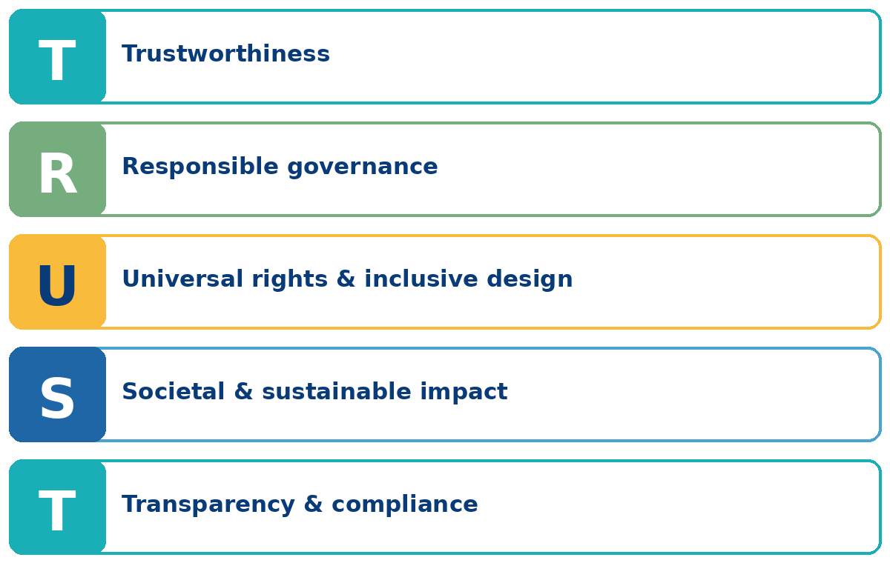

30October 2026
EUSAiR Workshop — Towards AI Regulatory Sandboxes
DAMA Bologna Technopole.
International Joint Initiative
TRUST-AI brings together leading institutions to advance AI that is trustworthy, inclusive, sustainable and compliant: from technical design to governance, regulation and real-world adoption.
Connecting research, education, innovation and policy across the AI lifecycle.

Upcoming Events
DAMA Bologna Technopole.
Founding Partners
 University of Bologna
Alma Human AI
University of Bologna
Alma Human AI
 Utrecht University
Inclusive AI Lab
Utrecht University
Inclusive AI Lab